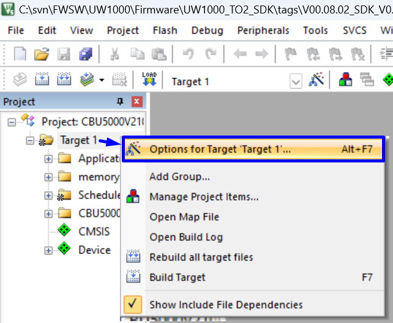

QSPI Flash Programming
Tip
Two types of Flash Algorithm (FLM) had been provided inside the “flm” folder.
If the flm name is too long and cannot be programmed, proceed to shorten the flm name.
Manufacturer |
Flash Model |
FLM File Name |
|---|---|---|
Macronix |
MX25V4035F |
CB5000V210_MACRONIX_MX25V4035F_V01.01.FLM |
Puya |
P25Q40SH |
CB5000V210_PUYA_P25Q40SH_V01.01.FLM |
提供了两种 Flash 算法 (FLM)，存放在 “flm” 文件夹中。
如果 flm 文件名过长导致无法编程，请将 flm 文件名缩短。
厂商 |
Flash 型号 |
FLM 文件名 |
|---|---|---|
Macronix |
MX25V4035F |
CB5000V210_MACRONIX_MX25V4035F_V01.01.FLM |
Puya |
P25Q40SH |
CB5000V210_PUYA_P25Q40SH_V01.01.FLM |

{kind=link}
Setup Flash Programming Algorithm (FLM)
Tip
Right click on project target and select the “Option for Target”.
在项目目标上右键单击，然后选择“目标选项”。
{kind=link}
Flash Programming
Tip
Under “Debug” tab , Go to “Settings”
Select “Flash Download” tab
Click on “Add”
Pick the Flash Programming Algorithm(FLM) according to the SDK board used.
Click on “Add” after the FLM selection.
Revise the RAM for Algorithm: Size to “0x00008000” and click on “OK” to complete the setup
After the FLM setup, click on “Download” button to program the binary into the SDK Flash.
在调试”选项卡下，进入“设置”。
选择“闪存下载”选项卡。
点击“添加”。
根据使用的 SDK 开发板选择闪存编程（FLM）。
在选择 FLM 后点击“添加”。
修改RAM 大小为“0x00008000”，然后点击“确定”完成设置。
完成设置完成 FLM 设置后，点击“下载”按钮将程序编程到 SDK 闪存中。
{kind=link}
Erase Chip
Tip
The erase and programming options for QSPI Flash allow for “Full Chip Erase and Programming” and “Sector Erase and Programming.” When initially powering on to program firmware (FW) into the Flash, the “Erase Full Chip” option should be selected (as shown in Figure 4 5 Erase Full Chip). This operation will erase all pages of the Flash.
For subsequent firmware (FW) programming, if need to preserve the data of the first sector (size: 0x1000), you can choose the “Erase Sectors” option (as shown in Figure 4 6 Erase Sectors). This operation will retain the contents of the first sector.
QSPI Flash 编程的擦除和烧写可以选择 “全部擦除烧写” 和 “局部擦除烧写” 。在初次上电烧写固件（FW）到 Flash 时，需要选择“Erase Full Chip”（如图4-5所示）。此操作将擦除整个 Flash 的所有页面。
在之后的固件烧写过程，如果需要保留第一个扇区（大小为 0x1000）的数据，可以选择“Erase Sectors”选项（如图4-6所示）。此操作将保留第一个扇区的内容。
{kind=link}
{kind=link}